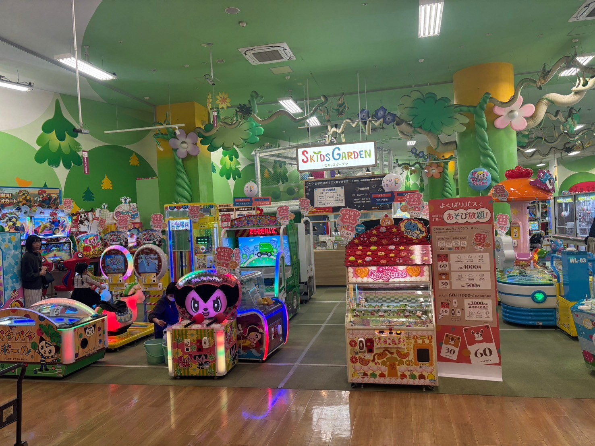

津田沼一丁目公園

津田沼駅から徒歩5分。広々とした芝生と遊具があり、家族で楽しめる公園です。
住所：〒275-0016 千葉県習志野市津田沼１丁目４
アクセス：津田沼駅南口から徒歩5分
モーリーファンタジー津田沼店

四季折々の花々が楽しめ、リラックスできる市民の憩いの場。ジョギングコースも整備されています。
住所：〒275-0016 千葉県習志野市津田沼１丁目２３−１ イオンモール津田沼店 ３階
アクセス：津田沼駅北口から徒歩10分
津田沼公園

自然が豊富で、バードウォッチングや散策にぴったりの公園。季節の花も見どころです。
アクセス：谷津駅から徒歩15分